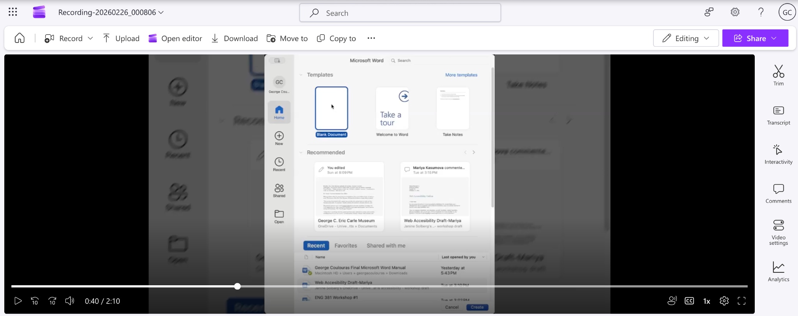
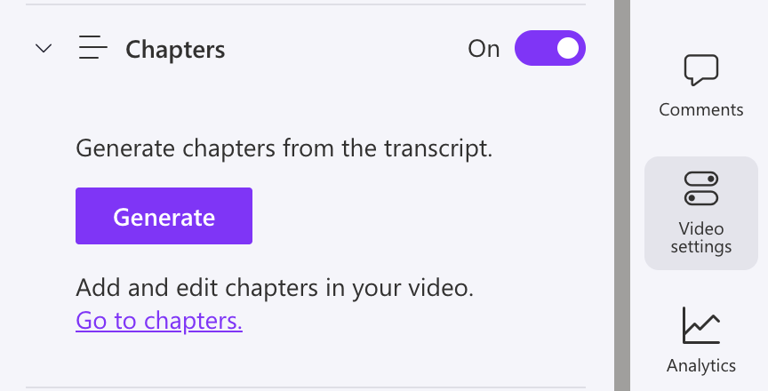
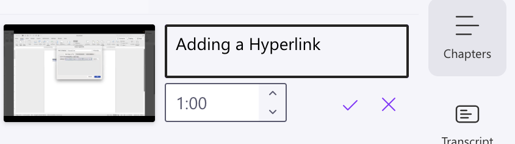
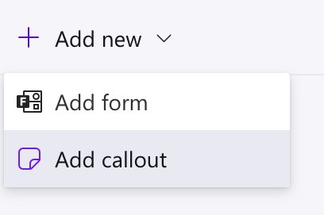
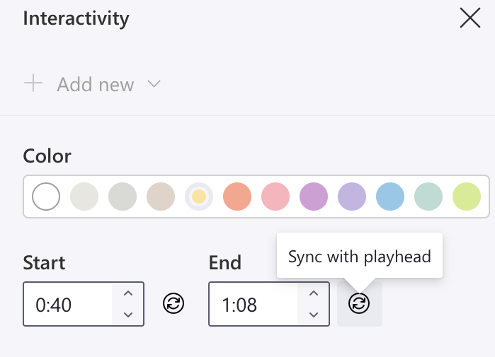
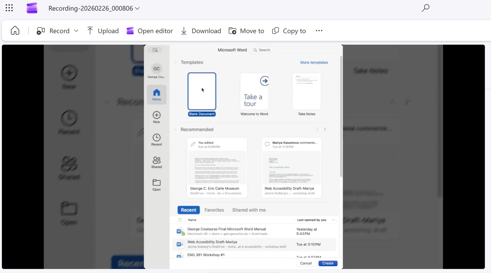
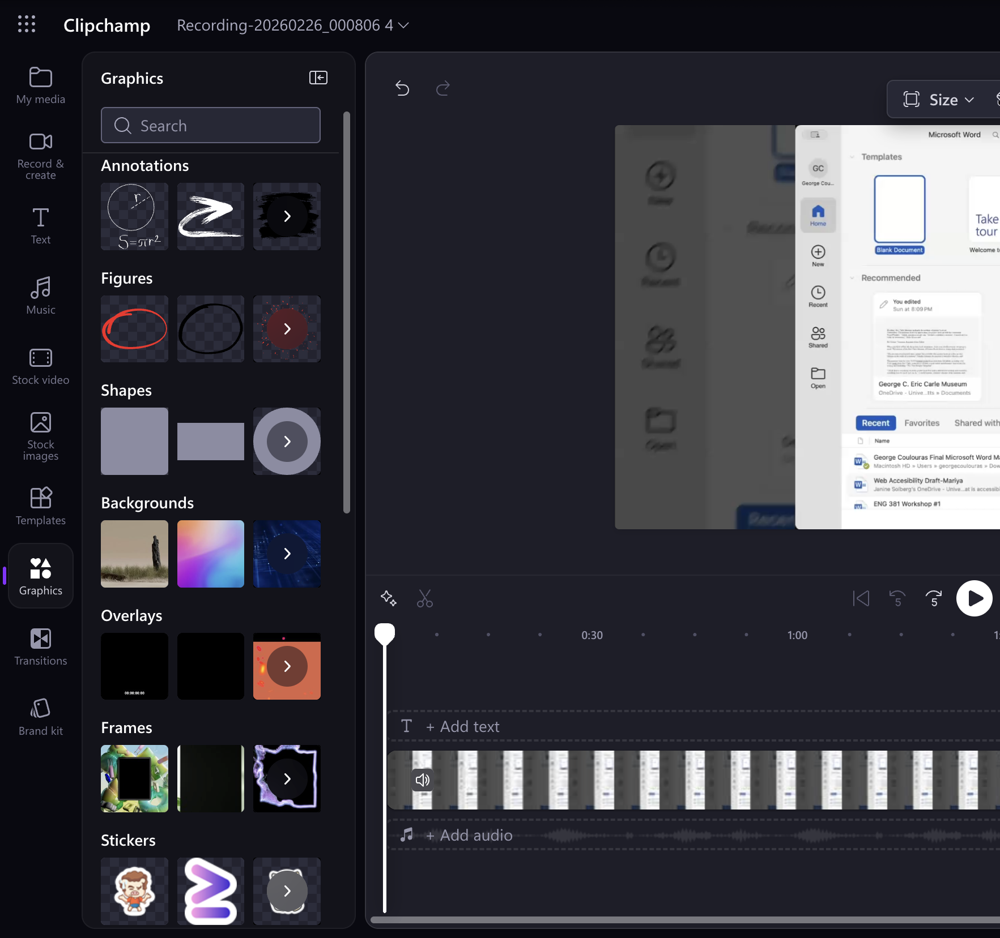
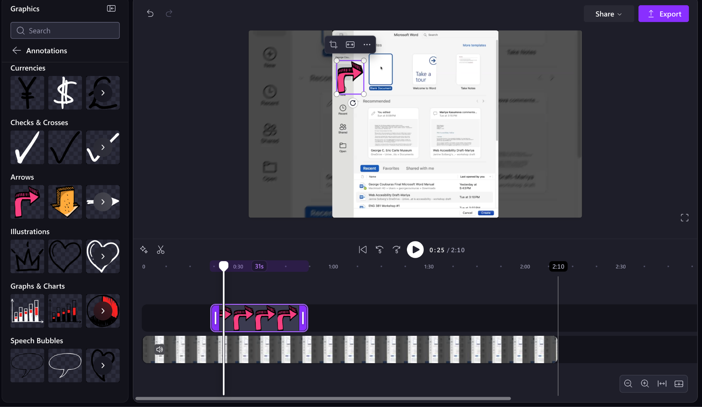

Reducing cognitive load is essential when developing videos for online content. Clipchamp, a web-based video editing application, is a common tool for creating videos for online tutorials and other video content. This section will outline how to add accessible features to Clipchamp when making videos, ensuring they are accessible for all viewers.
Chapters allow you to split your video into chunks, reducing cognitive load and making it skimmable for viewers and listeners.
Open the Video settings tab on the toolbar (Troubleshooting Tip: This is not the settings icon in the top-right corner of your screen).

Set the Chapters setting to On.
Click Generate. A new tab called Chapters is created on the toolbar. (If your captions are not generating, refresh the page, and click Generate once more).

Open the Chapters tab.
Click New chapter.
In the upper box, enter your chapter’s title.
In the lower box, enter your chapter’s start time. Or, click the up/down arrow to increase/decrease the start time by one second.
Click the purple checkmark icon to add your chapter.

The chapter appears in your video as its own segment. To see a visual example of a chapter, and for more on how chapters can influence skimmability, click here.
Using visual mark-up in your video helps draw the reader’s attention to something, which allows their working memory to process less information. Visual mark-up is especially helpful for people with Attention Deficit/Hyperactivity Disorder (ADHD).
Open the Interactivity tab on the toolbar.
Click Add new. A dropdown menu appears.
Select Add callout. The callout template appears on your screen with the text “Enter your callout”.

Click on the callout to enter text. (Troubleshooting tip: click on the right side of the callout so your cursor is on the I-beam).
In the Interactivity tab, click the circle with your preferred color option to change the callout’s color.
In the Start and End boxes, add your callout’s start and end time in the video (Optional: Click Sync with playhead to make your start/end time the location of your cursor in the video. This can help start your callout at exactly the right moment).

Click the purple checkmark to add the callout.
Your callout is inserted into the video at your chosen start and end times.
You must open Clipchamp’s video editor to add annotations.
Click Open editor. (If this is your first time opening the video editor, a pop-up window appears. If this occurs, click Copy Now). You are redirected to the video editor.

Open the Graphics tab on the toolbar.
In the Annotations section, click the ‘>’ box to see more options (Troubleshooting Tip: When you hover over the square, the text ‘See More’ appears). All annotation options appear.

Click on your preferred annotation. A pop-up appears.
Click Add to my timeline.
In the timeline of your video, select and drag the annotation box to determine its start and end time in the video. (Troubleshooting Tip: The annotation appears above your video in the timeline).
To move your annotation on the screen, select and drag the annotation.

The annotation appears in your video where you placed it on the screen during the start and end time.